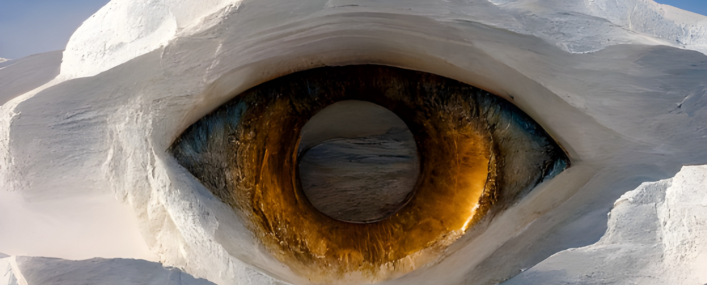

Oranz Naamé
Du sentiment insulaire à une vague de citoyenneté mondiale.
My artistic evolution
As a poet and visual artist from Reunion Island, I have been capturing, for about 30 years, on the soft blur of the performing arts of the Indian Ocean and abroad, with an increasing part of my research being dedicated to the life lived poetry and its writers all around the world.According to the acquaintances and trust, not to references, my journey is marked by decisive encounters. As there is no coincidence when it comes to travels or artistic exchanges. I distinguish lightning from the shadows of the musicians, to fix the eternal moment of the present, which we then share.
What else can I say about poetry, that allows me to go beyond all boundaries?
Poetry is the ever-shining light in my life.
Artists from the Indian Ocean, Brazil, Jamaica, Africa, as well as citizens of the world, I greet all who nurture this universal fibre.